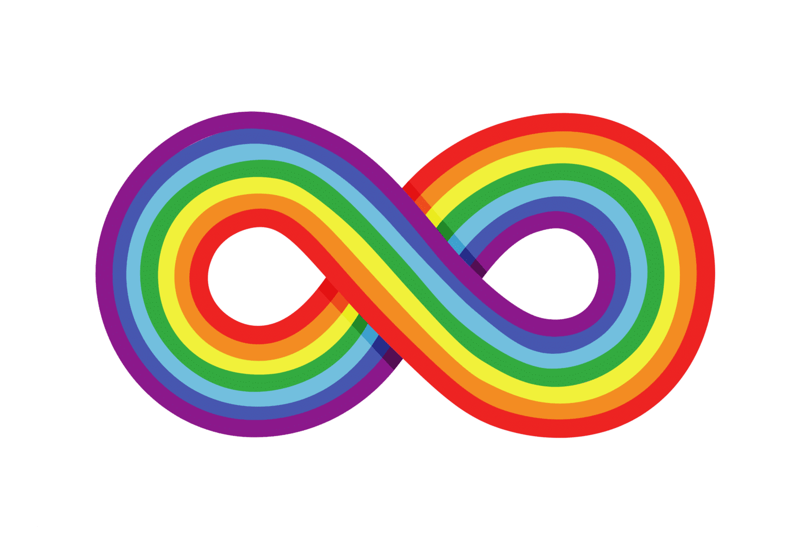
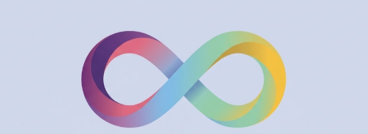

שער לעולם נגיש יותר!
הגעתם לאתר שיראה לכם כיצד הטכנולוגיה מגשרת על אתגרי התקשורת והוויסות החושי של אנשים על הרצף האוטיסטי.

הגעתם לאתר שיראה לכם כיצד הטכנולוגיה מגשרת על אתגרי התקשורת והוויסות החושי של אנשים על הרצף האוטיסטי.